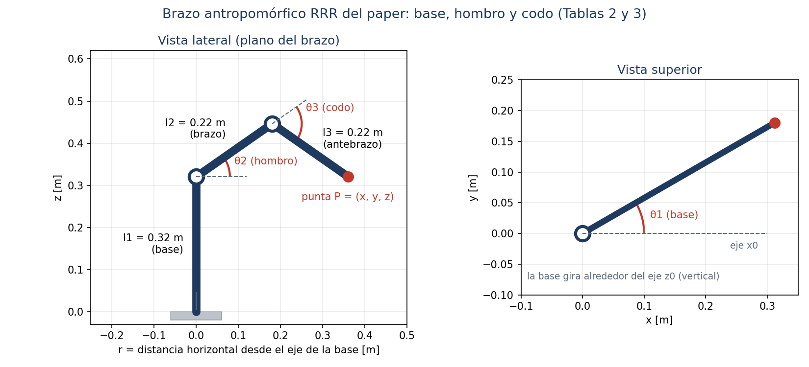

Universidad Nacional de Ingeniería Facultad de Ingeniería Industrial y de Sistemas · Unidad de Posgrado Maestría en Inteligencia Artificial
MIA-12 Robótica y Sistemas Autónomos · Trabajo final
Avance del trabajo final explicado paso a paso
Qué hace cada paso, qué figura produce y con qué tema del curso se relaciona
Grupo 5
Docente
René Abarca Urbano Ángel Joel Alvarado Crisanto Javier Alexander Fernández Purizaca Carlos Pérez Pérez Jorge Valega
Mg. Wilson Dennis Reyes Vásquez
Ciclo 2026-2 · Sección B
Paper base: Urrea, C.; Kern, J.; Torres, V. (2024). Design, Simulation, and Comparison of Advanced Control Strategies
for a 3-Degree-of-Freedom Robot. Applied Sciences, 14(23), 11010. https://doi.org/10.3390/app142311010
El trabajo final pide tomar un paper de un robot antropomórfico de 3 GDL con articulaciones solo de revolución (RRR) y
comprobar sus resultados con los métodos del curso. Elegimos el paper de Urrea, Kern y Torres (2024), que modela los tres
primeros ejes de un robot SCORBOT-ER V plus: la base (gira a la izquierda y a la derecha), el hombro y el codo
(suben y bajan el brazo).

Figura 0. El robot del paper. Los tres ángulos que se pueden mover son θ1 (base), θ2 (hombro) y θ3 (codo). Las
longitudes l1, l2 y l3 son las de la Tabla 3 del paper. La "punta" es el extremo del brazo, donde iría la herramienta.
En una frase: todo el trabajo consiste en relacionar los tres ángulos del robot con la
posición de la punta (cinemática), con su velocidad (jacobiano) y con las fuerzas de los motores (dinámica).
Cada paso usa el resultado del anterior.
1. Cinemática directa→2. Cinemática inversa→3. Espacio de trabajo→
4. Jacobiano y singularidades→5. Dinámica→Control→Red neuronal
Relación de cada paso con el curso
Paso del trabajo
Tema del sílabo
Semana
Lo que vimos en clase
1. Cinemática directa
Matrices de transformación homogénea; algoritmo de Denavit-Hartenberg
1 y 2
Sesión 2 (23-09): cinemática directa del SCARA G1 por el método geométrico, MTH y DH
2. Cinemática inversa
Cinemática inversa por el método geométrico
3
Sesión 3 (30-09): dos soluciones (codo arriba y abajo) y el Ejm_1 del robot articular de 3 GDL, que fue nuestra tarea
3. Espacio de trabajo
Cinemática directa (alcance del robot)
2
Sesión 2: espacio de trabajo del SCARA G1
4. Jacobiano y singularidades
Cinemática diferencial: jacobiano analítico y geométrico
4
Sesión 4 (07-10): jacobiano del SCARA de 4 GDL, que fue nuestro video
5. Dinámica
Modelo dinámico por la formulación de Lagrange
10
Todavía no visto en clase: lo adelantamos para revisar el paper
Fuente de los temas y semanas: sílabo del curso, contenido analítico por sesión (pp. 2-4). En la sesión 5 (14-10) se
indicó que la primera parte obligatoria del trabajo es cinemática directa, espacio de trabajo, cinemática inversa, jacobiano y
singularidades, que luego sirven de insumo a la dinámica y al dataset de la parte de IA.
Paso 1 · Cinemática directa
Tema del curso: semanas 1 y 2 del sílabo (MTH y algoritmo de Denavit-Hartenberg). En la sesión 2
lo aplicamos al SCARA G1; aquí lo aplicamos al robot del paper.
En palabras simples: si sabemos cuánto giró cada articulación (θ1, θ2, θ3), ¿dónde queda la punta del
robot? La respuesta es una fórmula para x, y, z.
Qué hicimos
Con la tabla DH del paper (Tabla 2) armamos una matriz de transformación por articulación y las multiplicamos, igual que en
clase: 0T3 = 0A1 · 1A2 · 2A3. La última columna de esa
matriz es la posición de la punta:
x = cos θ1 · (l2 cos θ2 + l3 cos(θ2+θ3))
y = sin θ1 · (l2 cos θ2 + l3 cos(θ2+θ3))
z = l1 + l2 sin θ2 + l3 sin(θ2+θ3)
Después comparamos estas fórmulas, en forma simbólica, con las que el paper imprimió en sus ecuaciones (9), (12), (13) y (14).
Qué obtuvimos
Ecuación del paper
Resultado
(12) coordenada x
Coincide
(14) coordenada z
Coincide
(9) matriz 1A2
Errata: en la fila 2 dice l2·cos θ2 y debe decir l2·sin θ2
(13) coordenada y
Errata: la fórmula impresa no es igual a la de DH
Figura 1. Cómo leerla: se deja fijo el hombro (20°) y el codo (−60°) y se gira la base de −155° a 155°. La línea
azul es la coordenada y calculada con DH; la roja punteada, la que da la ec. (13) del paper. Si la ecuación estuviera bien, las
dos curvas serían la misma. Por ejemplo, con θ = (30°, 20°, −60°), DH da y = 0.1876 m y la ec. (13) da 0.0464 m.
Por qué importa: todo lo que sigue se construye sobre la cinemática directa. Por eso usamos nuestra versión comprobada y no
las ecuaciones (9) y (13) del paper.
Paso 2 · Cinemática inversa
Tema del curso: semana 3 del sílabo (cinemática inversa por el método geométrico). Es el mismo
procedimiento del Ejm_1 de la sesión 3 (robot articular de 3 GDL), que el grupo resolvió como tarea.
En palabras simples: es el problema al revés. Si queremos que la punta llegue a un punto (x, y, z), ¿cuánto
debe girar cada articulación? Hace falta porque el robot no mueve la punta directamente: mueve sus motores.
Qué hicimos
Aplicamos el método geométrico de clase a los puntos de la trayectoria que publica el paper (Tablas 10 y 11):
θ1 = atan2(y, x) (giro de la base hacia el punto)
r = √(x² + y²), s = z − l1 (el punto visto en el plano del brazo)
cos θ3 = (r² + s² − l2² − l3²) / (2·l2·l3) (ley de cosenos)
sin θ3 = ±√(1 − cos² θ3) (dos soluciones: codo arriba o codo abajo)
θ2 = atan2(s, r) − atan2(l3·sin θ3, l2 + l3·cos θ3) (θ2 = α − β, como en clase)
Luego comprobamos cada respuesta: metimos los ángulos en la cinemática directa del paso 1 y vimos si la punta llegaba al punto.
Qué obtuvimos (secuencia A, solución codo arriba)
Punto
x, y, z [m]
θ1 [°]
θ2 [°]
θ3 [°]
Error al volver [m]
P1 = P2 = P6
0.25, 0.01, 0.11
2.291
2.057
−84.130
1.7·10⁻¹⁷
P3
0.25, 0.11, 0.11
23.749
0.907
−76.924
4.2·10⁻¹⁷
P4
0.15, 0.11, 0.11
36.254
1.922
−100.777
3.4·10⁻¹⁷
P5
0.15, 0.01, 0.11
3.814
−0.344
−108.117
5.2·10⁻¹⁷
El error es prácticamente cero: la cinemática inversa es correcta. La solución codo abajo se descarta porque pide al hombro
bajar entre −76° y −108°, y el SCORBOT solo baja hasta −35° (Tabla 1 del paper).
Figura 2. Cómo leerla: cada línea de color es el brazo dibujado con los ángulos calculados (base, hombro y codo);
la línea negra punteada es la trayectoria del paper, un rectángulo a 11 cm de altura. Todas las puntas caen sobre las esquinas.
Paso 3 · Espacio de trabajo
Tema del curso: semana 2 del sílabo. En la sesión 2 dibujamos el espacio de trabajo del SCARA G1
barriendo sus articulaciones; aquí hacemos lo mismo con el robot del paper.
En palabras simples: ¿hasta dónde llega el robot? Movemos las tres articulaciones por todo su rango y
marcamos cada punto donde puede quedar la punta. La nube de puntos es el espacio de trabajo.
Qué hicimos
Barrimos θ1 de −155° a 155°, θ2 de −35° a 130° y θ3 de −130° a 130° (límites de la Tabla 1), calculamos la punta con la
cinemática directa y graficamos la nube en 3D y su corte de perfil.
Figura 3. Cómo leerla: a la izquierda, todos los puntos que alcanza la punta (forma de esfera hueca). A la
derecha, el mismo espacio visto de perfil: el cuadrado negro es el hombro y los puntos rojos son los de la trayectoria del paper.
El hueco blanco del centro aparece porque el codo no se dobla más de 130° y la punta no puede acercarse tanto al hombro.
Qué obtuvimos
Resultado
Valor
Alcance máximo desde el hombro (l2 + l3)
0.44 m
Radio del hueco interior, por el límite del codo
0.186 m
Altura de la punta (mínima y máxima)
−0.026 m a 0.760 m
Distancia de los puntos del paper al hombro
0.258 m a 0.345 m
Por qué importa: confirma que la trayectoria del paper es alcanzable, a más de 7 cm de los bordes. También servirá para
generar el dataset de la red neuronal solo con posturas que el robot puede alcanzar de verdad.
Paso 4 · Jacobiano y singularidades
Tema del curso: semana 4 del sílabo (cinemática diferencial: jacobiano analítico y geométrico).
En la sesión 4 lo calculamos para el SCARA de 4 GDL; aquí usamos los mismos dos métodos con el robot del paper.
En palabras simples: el jacobiano J es una matriz que responde: si cada motor gira a cierta velocidad,
¿a qué velocidad y en qué dirección se mueve la punta? (v = J · θ̇). Una singularidad es una postura donde el robot
"se traba": pierde una dirección de movimiento y, para seguir, los motores tendrían que girar muy rápido.
Qué hicimos
Método analítico: derivamos x, y, z del paso 1 respecto a θ1, θ2 y θ3.
Método geométrico: cada columna es zi−1 × (p − pi−1), con los ejes de giro de cada articulación.
Comparamos los dos (dieron lo mismo) y buscamos dónde el determinante vale cero:
det(J) = −l2 · l3 · sin θ3 · (l2 cos θ2 + l3 cos(θ2+θ3))
det(J) = 0 cuando…
Qué significa en el robot
sin θ3 = 0 (codo en 0°)
Brazo totalmente estirado: está en el borde de su alcance y no puede estirarse más
l2 cos θ2 + l3 cos(θ2+θ3) = 0
La punta queda justo encima del eje de la base; girar la base ya no la mueve
Figura 4. Cómo leerla: cada punto del mapa es una postura del hombro (eje horizontal) y del codo (eje vertical).
El color es el valor de det(J); las líneas negras son las singularidades (det = 0). Los círculos amarillos, que son las posturas
de la trayectoria del paper, están en zona roja intensa, lejos de las líneas.
Resultado: en los puntos del paper, det(J) vale entre 0.0069 y 0.0129 m³ y el número de condición entre 2.0 y 3.2
(cuanto más cerca de 1, mejor). La trayectoria pasa lejos de las singularidades.
Paso 5 · Revisión de la dinámica
Tema del curso: semana 10 del sílabo (modelo dinámico de un robot rígido por la formulación de
Lagrange). Todavía no se vio en clase; lo adelantamos porque el paper publica su modelo dinámico y hay que revisarlo antes de usarlo.
En palabras simples: la cinemática dice dónde está el robot; la dinámica dice qué fuerza (torque)
debe hacer cada motor para moverlo. La ecuación es τ = M(θ)·θ̈ + C(θ, θ̇) + G(θ): M es la inercia (cuánto cuesta acelerar el brazo),
C son los efectos de giro (Coriolis y centrífugo) y G es el peso.
Qué hicimos
Armamos el lagrangiano (energía cinética menos energía potencial) con las masas, centros de masa e inercias de la Tabla 3 del
paper y obtuvimos M, C y G en forma simbólica. Luego las comparamos término a término con las ecuaciones (21) a (37) del paper.
Qué obtuvimos
Término
Comparación con el paper
Gravedad G y efectos de giro C
Iguales
Inercia: M11, M22, M23, M33
Iguales
Inercia: M12 y M13
Diferentes: el paper da I2zz + I3zz e I3zz; nosotros obtenemos 0
Observación del grupo (por confirmar con el docente). La base gira sobre un eje vertical y el hombro y
el codo sobre ejes horizontales, perpendiculares al de la base. Por eso, acelerar solo el hombro no debería exigir torque a la base:
M12 = M13 = 0. Con los datos del paper, en el punto P1 su modelo pide 0.0621 N·m en la base para acelerar el hombro a 1 rad/s²;
el nuestro pide 0.
Figura 5. Cómo leerla: salida del paso 5 en MATLAB Online. "C nuestra − C paper" y "G nuestra − G paper" dan
[0, 0, 0], es decir, iguales. En las dos matrices M de P1 solo cambian las casillas fuera de la diagonal de la primera fila y
la primera columna (0.0621 y 0.0362 en el paper, 0 en nuestro modelo).
Por qué importa: este modelo es la base del control por par calculado (semana 11) y del dataset para entrenar la red
neuronal (semanas 12 y 13).
Cómo lo ejecutamos: Python y MATLAB Online
Programamos los cinco pasos en Python (carpeta src/ del repositorio) y los repetimos en MATLAB Online
(matlab/Grupo5_TrabajoFinal_Avance.m), solo con MATLAB base y Symbolic Math Toolbox, sin rotx ni toolboxes de
robótica. Los dos dan exactamente los mismos números. El script de MATLAB se ejecuta con una línea en la ventana de comandos:
Figura 6. MATLAB Online, pasos 1 y 2: las fórmulas de la punta, las erratas de las ecuaciones (9) y (13), y los
ángulos de cada punto con sus dos soluciones (codo arriba dentro de límites, codo abajo fuera).Figura 7. MATLAB Online, paso 4: el mismo mapa de det(J) de la Figura 4, generado en MATLAB.
Lo que sigue y en qué semana del curso se ve
Siguiente paso del trabajo
Qué haremos
Semana del sílabo
Trayectorias
Unir los puntos de la secuencia A con interpoladores, como en el paper
6 (interpoladores) y 7 (control cinemático por jacobiano)
Control
Control por par calculado, para reproducir la Tabla 12 del paper, y PID no lineal
10 (PID no lineal) y 11 (par calculado)
Red neuronal
Generar un dataset con nuestro modelo y entrenar una red que resuelva la cinemática inversa; compararla con la solución geométrica del paso 2
12 (cinemática inversa con redes neuronales) y 13 (identificación con MLP)
Validación
Medir errores con RMS, RSD e IA, como el paper, y explicar las diferencias (incluida la de M12 y M13)
Rúbrica: evaluación y validación
Demo
Simulación animada del brazo siguiendo la trayectoria
Rúbrica: presentación y defensa
Consultas para el docente
¿Es aceptable el SCORBOT-ER V plus, que tiene 5 ejes, modelado con sus 3 primeros (base, hombro y codo)?
El paper publica solo Izz. ¿Basta con suponer Ixx e Iyy (barra o cilindro) o se requiere el tensor completo?
¿Está de acuerdo con que M12 y M13 deben ser cero en este robot?
Glosario rápido
Término
Significado
GDL
Grados de libertad: cuántos movimientos independientes tiene el robot (aquí 3: base, hombro y codo)
RRR
Tres articulaciones de revolución, es decir, que giran (no se deslizan)
DH
Denavit-Hartenberg: tabla de 4 parámetros por articulación para armar las matrices del robot
Cinemática directa / inversa
De ángulos a posición de la punta / de posición de la punta a ángulos
Jacobiano
Matriz que convierte velocidades de los motores en velocidad de la punta
Singularidad
Postura donde det(J) = 0 y el robot pierde una dirección de movimiento
Dinámica (M, C, G)
Ecuaciones que relacionan el movimiento con los torques de los motores